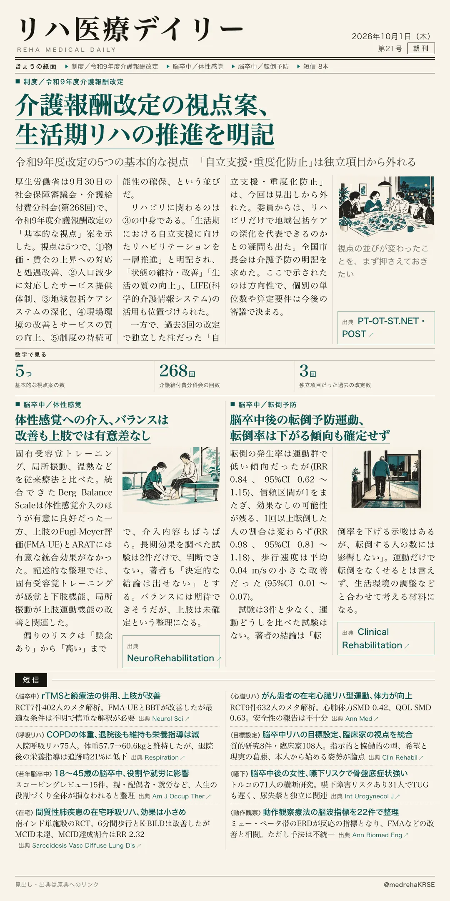
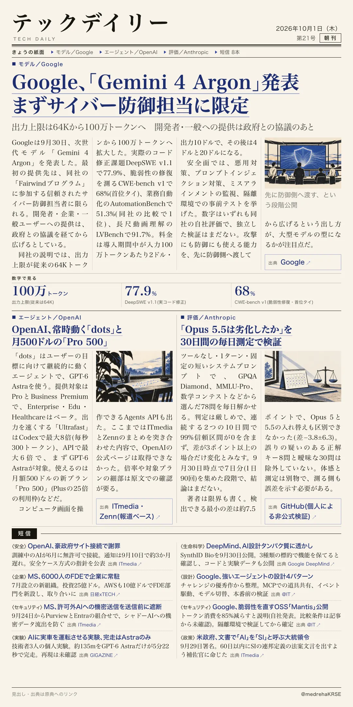

リハ医療デイリー
介護報酬改定の視点案、生活期リハの推進を明記
令和9年度改定の5つの基本的な視点 「自立支援・重度化防止」は独立項目から外れる
厚労省が9月30日の介護給付費分科会に、令和9年度介護報酬改定の「基本的な視点」案を示した。

テックデイリー
Google、「Gemini 4 Argon」発表 まずサイバー防御担当に限定
出力上限は64Kから100万トークンへ 開発者・一般への提供は政府との協議のあと
Googleが9月30日、次世代モデル「Gemini 4 Argon」を発表した。
